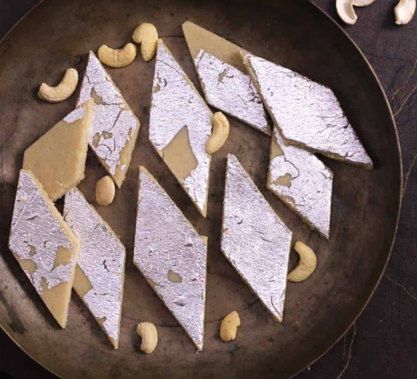

-: RECIPE :-
Gulab Jamun:
Ingredients
- 2 cups (200 gm)- Flour
- 200 gm- Sooji/Rava
- 1½ tsp- Baking Powder
- 1½ tsp- Baking Soda
- For Frying- Oil
- 1 kg- Sugar
Process
- Step 1: Combine sugar and water in a pan and bring to a boil to create the syrup. Remove from heat, add cardamom, and set aside to cool.
- Step 2: In a mixing bowl, combine flour, paneer, sooji, baking powder, and baking soda. Mix gently to form a soft dough, avoiding over-kneading.
- Step 3: Divide the dough into 30-35 portions and gently shape them into round balls.
- Step 4: Heat oil on low flame and fry the balls until they turn golden brown.
- Step 5: Transfer the fried Gulab Jamuns into the cooled sugar syrup. Once all the Gulab Jamuns are added, bring the syrup to a boil again briefly, then remove from heat.
- Step 6: Enjoy your homemade Gulab Jamun warm, garnished with your favourite toppings.
Barfi:
Ingredients
- 300 ml- condensed milk
- 2½ cup- milk powder
- 2 tablespoon- ghee
- 1 cup- water
- 1 teaspoon- powdered green cardamom
- 1 handful- pistachios
Process
- Step 1: Take a large bowl and add milk powder to it along with milk. Make a rigid dough using these ingredients. Once done, keep the dough in the freezer and freeze it for at least for 20 minutes.
- Step 2: Take the dough and grate it in a bowl. Keep this grated dough aside for further usage. Take a deep bottomed pan, keep it on low flame and heat ghee in it.
- Step 3: Add the grated dough to this pan with water. Mix well and stir in cardamom powder in the pan. Cook this mixture until the water dries out and the mixture accumulates in the centre of the pan..
- Step 4: Pour this prepared mixture into a greased tray and garnish it with almonds and pistachios. Let the mixture cool down and cut the barfi into desired shapes. Garnish it with silver varq and serve!
- Step 5: Enjoy your homemade Barfi, garnished with your favourite toppings.
